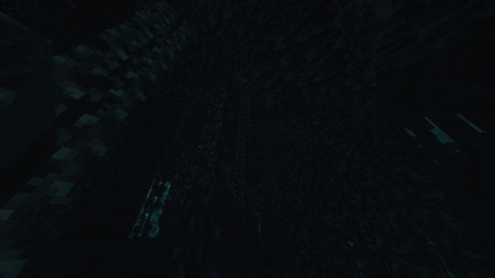

<!DOCTYPE html>
<html lang="ru">

</html>

<head>
    <title>Unburning and Collapse SMP</title>
    <link rel="stylesheet" href="sheet.css">
    <link rel="icon" type="image/x-icon" href="../img/minecraft_logo.ico">
    <meta charset="UTF-8">
    <meta name="viewport" content="width=device-width, initial-scale=1.0">
</head>

<body style="background-color: rgb(8,12,14);">

    <div class="header">
        <div class="nav-links" id="navLinks">
            <div class="dropdown">
                <button class="button" onclick="toggleMenu()">&#9776;</button>
                <div class="dropdown-content" id="dropdownMenu">
                    <a href="../chrsheets/soon.html">Кредиты</a>
                    <a href="../index.html#contact">Обратная связь</a>
                    <a href="../chrsheets/soon.html">О нас</a>
                    <a href="../gallery.html">Галерея</a>
                </div>
            </div>

            <a href="../lore.html">Лор</a>
            <a href="../character-bios.html">Анкеты персонажей</a>
            <a href="../index.html">Главная</a>
        </div>
    </div>

    <div class="post" style="background-color: rgba(9,10,14,255);">
        

        <h1 style="color:rgb(141, 9, 9);">Первая жертва</h1>

        <p style="color: white;">
            Тина. Мерзкая, болотная грязь, издавающая противный хлюпающий звук. Свисающая с деревьев растительность
            вновь прилипла к лицу, что даже отмахнувшись осталось ощущение чего-то мокрого, неприятного. Ничего не
            поделать, тлеющий факел мог осветить лишь то, что находится под ногами. Здесь всегда полумрак, даже в свете
            дня. Полнолуние не делало ситуацию лучше, скорее ухудшало, навевая на не самые лучшие мысли, которые могут
            быть посреди густого болота ночью. Беспокойная тяжесть в грудной клетке становится сильнее с каждым шагом.
            Искать кого-то пропавшего здесь было скорее отчаянной мерой. И, вроде нет, кто в здравом уме вообще пойдёт
            сюда, зная о том что это не самое безопасное место в Матéре? Особенно в такое время. Эта часть территории
            даже не освещена особо, идти сюда не имея ничего для защиты можно сравнить с лишением самого себя жизни.
            Тяжелый вздох, разрезающий тишину. Имеет ли это смысл? Пора просто уходить отсюда. <br>
            Шаг неосознанно ускорился, где-то вдали уже виднелись маленькие огоньки. Несмотря на это, чувства
            безопасности как такового тут нет. Явью было лишь ощущение, как-будто что-то не так. Разве такая тишина это
            нормально? Не было даже звука ночных насекомых. И.. <br>
            Мысль не успевает промелькнуть, как внезапно, нога увязла в какой-то пакости. Факел излучал гораздо меньше
            света. Вытащить её не было проблемой, но кое-что другое заставило замереть на месте.
            <br><br>
            Стоило лишь приподнять голову, как тело как будто пробило электрическим током, внутри всё сжалось. Ступор.
            Освещения от факела более чем достаточно чтобы увидеть знакомые черты лица. Это как будто завораживало, в
            самом ужасном проявлении этого слова. Пропавший нашёлся.
            <br><br>
            <span style="color:rgb(141, 9, 9);font-weight: bolder;">Энтити.</span>
            <br><br>
            Двигаться не получалось. Глаза скользили по телу, на котором были странные, но до боли знакомые, ужасающие
            следы схожие с той чертовщиной с полей. Вода, в которой оно находилось слегка почернела. Однако, по какой-то
            причине запаха кроме привычной болотной сырости не было. Каждое мгновение казалось вечностью, но в конце
            концов ступор пропал.
            <br><br>
            Его было тяжело вытащить, как будто что-то держало из глубины, не желая отдавать. И думать не хотелось что
            именно. <br>
            Дыхание сбилось, однако достать все-таки удалось. Факел упал куда-то в воду, но поднимать и лезть за ним не
            было никакого желания. Осознание происходящего всё ещё не приходило.
            В голове крутились вопросы, почему? Что вообще говорить остальным? Как это вообще объяснить?
            <br><br>
            Огни вдали то отдалялись, то приближались. Голову кружило, а меж лопаток появился холодок. Ощущение
            стороннего наблюдения. Но теперь всё равно. Болото уже за спиной. Территория столицы.<a href="secret2.html" style="color:rgb(141, 9, 9); text-decoration: none;">&#92432;</a>⭒๋࣭
        </p>
    </div>

    <script>
        function toggleMenu() {
            const menu = document.getElementById("dropdownMenu");
            menu.style.display = (menu.style.display === "block") ? "none" : "block";
        }

        // Close the dropdown if the user clicks outside of it
        window.onclick = function (event) {
            if (!event.target.matches('.button')) {
                const dropdowns = document.getElementsByClassName("dropdown-content");
                for (let i = 0; i < dropdowns.length; i++) {
                    const openDropdown = dropdowns[i];
                    if (openDropdown.style.display === "block") {
                        openDropdown.style.display = "none";
                    }
                }
            }
        }

    </script>
</body>